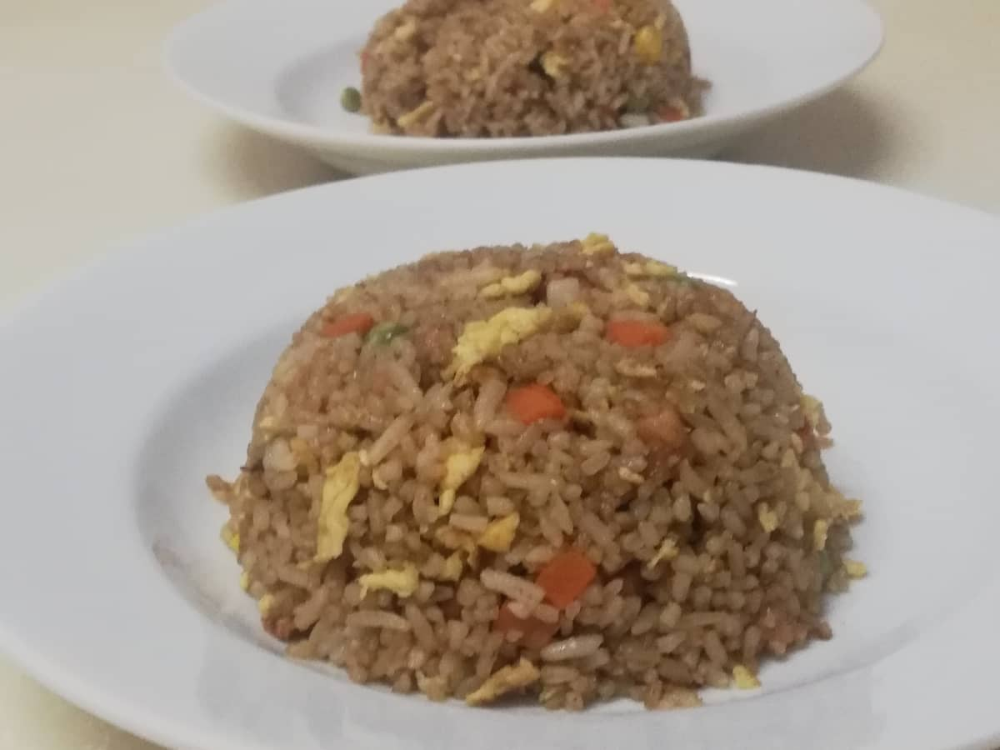

Simple Egg Fried Rice

Description
Egg Fried Rice for one when you're wanting to get to work faster.
Ingredients:
- 2 - 3 eggs
- Day old rice or leftover rice/in a serving for one, 2 - 3 cups are good enough
- 1 whole onion or shallot
- 5 or more cloves of garlic
- 1 tbsp of soy sauce
- Optional: spring onion for garnish
Steps:
- Prep the onion/shallot slices and the minced garlic and set aside.
- Heat up a pan of oil and once hot, pour in the onions and minced garlic.
- Fry them until there's aroma, and add in the egg and let it cook for 10 seconds before adding the cooked leftover rice.
- Add a generous amount of say sauce around the pan and toss the rice/mix it evenly.
- Once fully cooked, serve on a plate and add the sliced spring onions for color and greens. Enjoy!